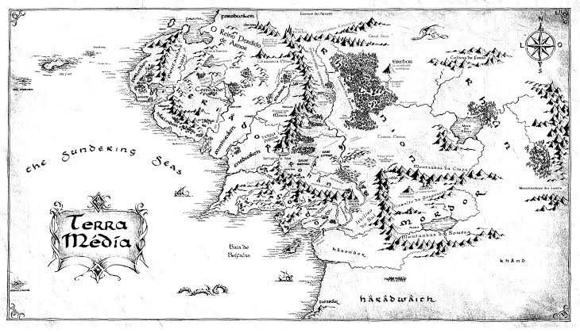

Campanha D&D 5E
(Caçada de Tevildo)
Muitos anos se passaram desde de a queda do senhor do escuro, muitos povos partiram e muitos vieram a esta antiga terra, o velho mago gandalf os convocou a nova-valfenda ou so valfenda; uma cidade governada por elfos, um boato sombrio assola midgard, que anel retornou e o senhor do escuro assumiu uma nova forma e a alcunha "Tevildo" e reune uma nova horda para dominar tudo e todos.
Missão:
Partir com o grupo de Valfenda para encontrar o rastro de Tevildo na cidade destruida no sopé das Montanhas Misteriosas.
